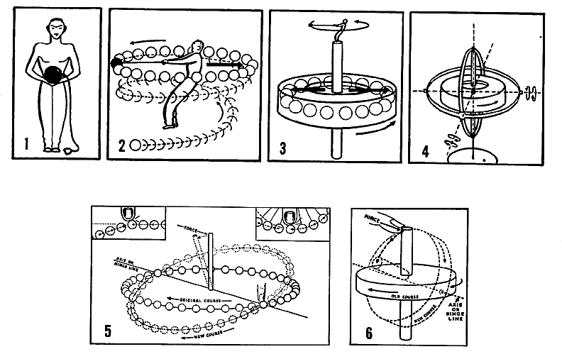

|  |
| Fig. 826 02A Hammer Throw: The weight on the cord accumulates energy as the man swings it around his head in a circular pattern that illustrates angular acceleration, When the weight is released it goes into linear acceleration as modified by any secondary restraints. |